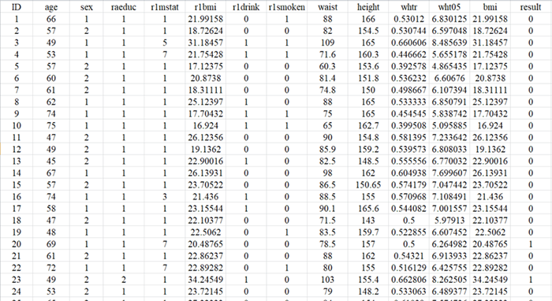

| 一、主成分分析简介 | |
| 主成分分析（Principal component analysis, PCA）是一种非监督的学习方法，其将所有自变量信息转换成相互独立的主成分，通常少数的前几个主成分便可综合原始自变量的大部分信息，因此是一种常见的数据降维方法。 | |
| 二、数据格式 | |
|  | |
| 注： 1、数据格式为“.csv”，数据中避免中文、空格或特殊字符 2、数据变量名必须为英文、阿拉伯数字或下划线的组合 3、变量列数需输入多列，以英文状态下的逗号或冒号分隔，如:2,3,4或2:4 4、导入数据后，各变量所对应的列数可在输出界面显示和查询 |
|
| 三、输出结果展示 | |
| 此处展示主成分的特征值、贡献率和累计贡献率（最多展示前10个主成分）。下载表格中，提供所有主成分结果。 示例如下： |
|
| 如果选择绘制三维PCA得分图，此处展示前三个主成分对应的PCA得分图。 示例如下： |
|